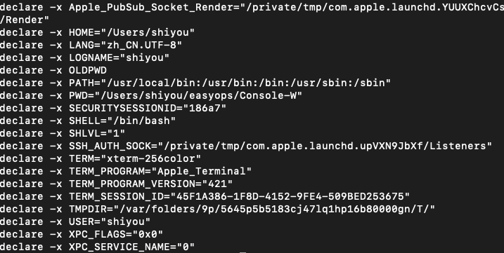

基础操作
export
显示所有环境变量

whereis
使用系统自动构建的数据库来搜索可执行文件，源文件和手册页面。
whereis java
which
它在环境变量PATH指定的目录中搜索可执行文件。此命令将打印可执行文件的完整路径。
which php

clear
清除窗口
文件操作
ls
列出文件
常用选项
-l 列出文件详情
-a 列出所有文件，包含隐藏文件
touch
创建文件
touch filename
cat
列出指定文件的内容
cat filename
more
显示文件的第一部分（用空格移动并键入q以退出）
more filename
head
输出文件的前10行
head filename
tail
输出最后10行文件。
tail filename
mv
将文件从一个位置移动到另外一个位置
mv f1 f2 // f1 文件的原路径， f2是目标路径
cp
将文件从一个位置移动到另外一个位置
cp f1 f2 // f1 文件的原路径， f2是目标路径
rm
删除文件
rm filename 删除文件
rm -f dirname 删除目录
-d：直接把欲删除的目录的硬连接数据删除成0，删除该目录；
-f：强制删除文件或目录；
-i：删除已有文件或目录之前先询问用户；
-r或-R：递归处理，将指定目录下的所有文件与子目录一并处理；
--preserve-root：不对根目录进行递归操作；
-v：显示指令的详细执行过程。
diff
比较文件
diff f1 f2
chmod
更改文件的读取，写入和执行权限
chmod -options filename
gzip
压缩文件
gzip filename => fi.gz
gunzip
解压缩gzip压缩的文件
gunzip filename
gzcat
查看gzip压缩文件，而不需要gunzip
lpr
打印文件
lpq
查看打印机队列
lprm
从打印队列移除某些内容
lprm jobnumbers
文本操作
awk
awk是处理文本文件最有用的命令。它一行一行的在整个文件上运行，默认情况下，它使用空格分隔字段。awk命令最常用的语法是
常用命令
awk '/search_pattern/ { action_to_take_if_pattern_matches; }' file_to_parse
实例：
新建一个文件内容是
root:x:0:0:root:/root:/usr/bin/zsh
daemon:x:1:1:daemon:/usr/sbin:/usr/sbin/nologin
bin:x:2:2:bin:/bin:/usr/sbin/nologin
sys:x:3:3:sys:/dev:/usr/sbin/nologin
sync:x:4:65534:sync:/bin:/bin/sync
文件路径：/Users/shiyou/Desktop/temp/awk_test
执行命令
awk -F':' '{ print $1 }' /Users/shiyou/Desktop/temp/awk_test
输出了：
解释：
-F 指定在我们要基于哪个分隔字段。在我们代码里面是使用冒号 ':'
{print $1} 是指打印出第一个匹配字段
grep
查找文件内的文本。您可以使用grep搜索与一个或多个正则表达式匹配的文本行，并仅输出匹配的行。
grep pattern filename
例如文件还是上面创建的文件，我们执行以下命令
grep -r nologin /Users/shiyou/Desktop/temp/awk_test
-i 选项强制grep忽略单词大小写
-r 可以用于搜索指定目录下的所有文件
输出：
wc
一个文件有多少行，多少单词和多少字符
wc filename
sort
排序文本文件的行
sort filename
uniq
省略重复的行
uniq filename
sort example.txt | uniq // 先排序再去重复
echo
显示一行文字
echo output
echo -ne "Hello\nWorld\n" // 输出换行
tr
把所有小写字母变成大写
cat example.txt | tr 'a-z' 'A-Z'
nl
显示文件的行数
nl -s". " filename
目录操作
mkdir
生成一个新目录
mkdir dirname
cd
一个目录跳转到另外一个目录
cd dirname
pwd
告诉你你目前所在的目录
SSH&系统信息&网络操作
ssh
ssh 是一个用来登录到远程机器并执行命令的程序
ssh user@host //登录到的机器地址
ssh -p port user@host // 连接到特定端口的选项
whoami
返回当前登录用户名
quota
显示磁盘配额
date
显示当前日期和时间
cal
显示月份的日历
uptime
显示当前的正常运行时间
w
显示谁在线
finger
显示有关用户的信息
finger username
uname
显示内核信息
man
显示指定命令的手册
man command
df
显示磁盘使用情况
du
显示文件名中文件和目录的磁盘使用情况（du -s只给出一个总数）。
du filename
last
列出最后登录的指定用户
last username
ps
列出您的进程
ps -u yourusername
kill
使用您所提供的ID杀死进程
kill PID
killall
用名称杀死所有进程
killall processname
top
显示当前活动的进程
bg
列出停止的或后台工作的Job; 恢复在后台停止的Job。
fg
前台化最近的Job
ping
Pings主机并输出结果
whois
获取域的whois信息。
whois www.baidu.com
dig
获取域的DNS信息
dig www.baidu.com
wget
下载文件
scp
在本地主机和远程主机之间或两台远程主机之间传输文件。
从本地主机复制到远程主机
scp source_file user@host:directory/target_file
从远程主机复制到本地主机
scp user@host:directory/source_file target_file
scp -r user@host:directory/source_folder farget_folder
curl
发送一个http请求
curl www.baidu.com 发送一个http请求
curl -v www.baidu.com 详细信息
passwd
允许当前登录的用户更改其密码。